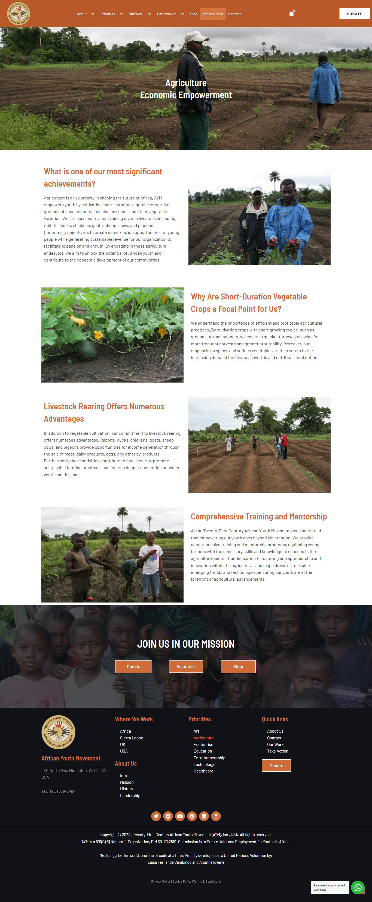
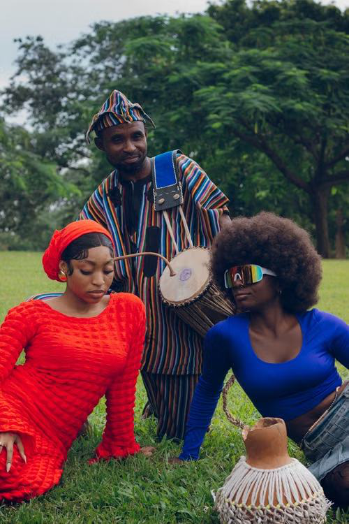
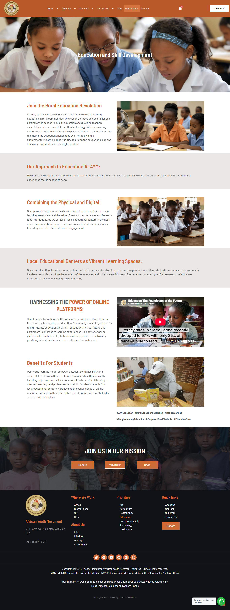
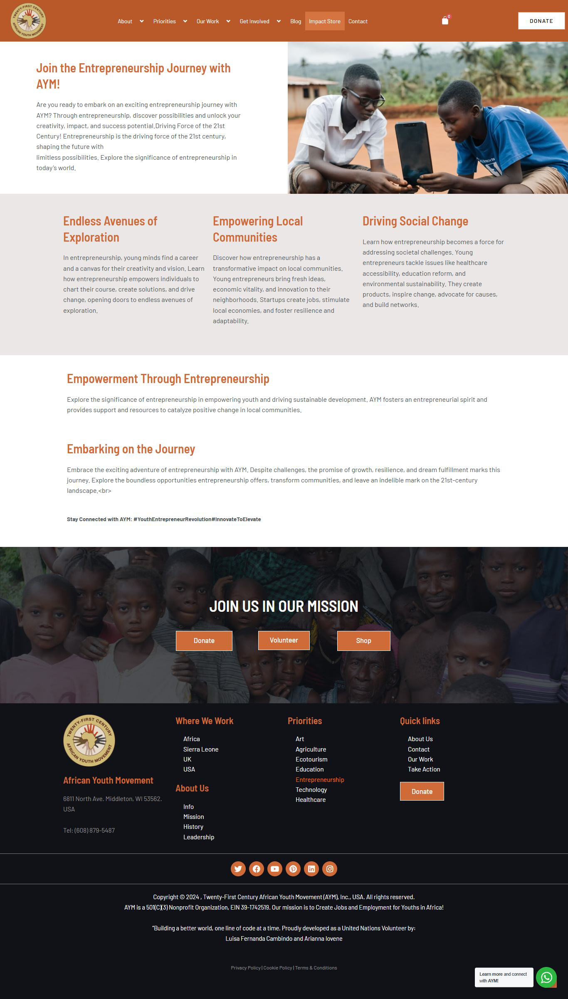

News
The Sierra Leone Paramount Chief Who Bridged Worlds
Paramount Chief Alhaji Alie Badara Sheriff III died on January...

AYM is a youth-serving organization that encourages and works with young people to explore creative solutions to poverty. Participate in our mission and help us continue creating a better tomorrow for our youth.
Lend your skills to empower local communities and shape sustainable youth-led futures.
Become a Volunteer →Bring the movement to your city or country and lead grassroots change.
Start an AYM Chapter →Each purchase gives purpose and supports youth-led programs.
Explore Store →AYM revitalizes youth potentials in rural communities for social and political stability through education, technology, agribusiness, eco-tourism, entrepreneurship, and the creative arts.
We harness creative talent to build a thriving Creative Industry that empowers young artists and creates sustainable employment across all genres.
Check Art →We cultivate short-duration crops, sustainable livestock, and youth entrepreneurship across Africa.
Check Agriculture →Revolutionizing rural learning through dynamic hybrid models, hands-on science, and mobile technology.
Check Education →The driving force of the 21st century—unlocking creativity, building sustainable ventures, and empowering local economies.
Check Entrepreneurship →Experience the natural beauty of Sierra Leone while supporting local community development and conservation.
Check Ecotourism →Addressing vital healthcare needs through community assessment, medical supplies, and stakeholder collaboration.
Check Healthcare →Bridging the digital divide in rural Sierra Leone through broadband expansion, computer education, and sustainable infrastructure.
Check Technology →AYM engages youth as change-makers in rebuilding and developing rural communities through innovative and progressive local-driven programs and enterprises. AYM facilitates increased access to critical resources and opportunities for rural youth.
Help people acquire the right skills that will help them improve their livelihood.
Provide youth with job training to acquire employable skills valuable for their future.
Shrink the share of youth most at risk of being left behind in the labor market.
Promote youth self-employment in Sierra Leone as a model for our African intervention.
From environmental sustainability to tech education and policy advocacy.
Mobilize local youth around pressing regional issues—from environmental sustainability to tech education and policy advocacy.
Donate Now →Run local campaigns via custom fundraising pages and leverage AYM's legal framework to pitch for institutional funding.
Apply as a Volunteer →Twenty-First Century African Youth Movement empowers rural youth through technology programs and prepares them for employment in good paying jobs and enables them to take control of their own future.
Transition from pure volunteer work to creating direct jobs. Hire local talent and build social enterprise models that generate revenue to fund the mission.
Start a Chapter →Host local events, participate in the African Lecture Series, and collaborate on continent-wide initiatives with leaders across Africa.
View Store →

Paramount Chief Alhaji Alie Badara Sheriff III died on January...

The African Youth Movement (AYM) trains Rwandan youth in leadership...

The journey of a volunteer using digital skills to empower African youth...
Can't find the answer you're looking for? Please chat to our friendly team.